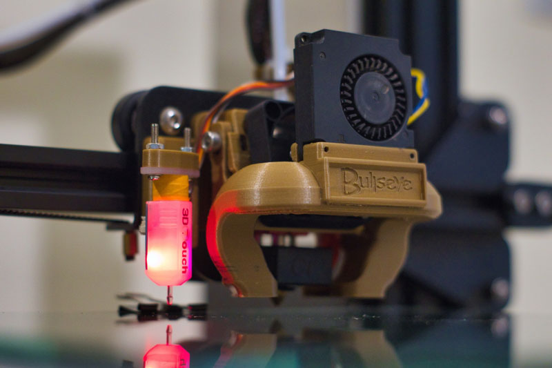

FAULKNER'S FANTASTIC FIGURES
If collecting figures or building model kits isn’t enough to satisfy your craving to create,
you can go the extra mile and customize your figures and models!


With our premium paints and top of the line airbrushes, and from a large array of colors and finishes, you can make your customized figure pop to life and off of the shelf.
And if customizing the figures and model kits we offer still isn’t enough, we also have 3D printing services so you can send us your personal designs to print, finish, paint, and ship directly to your home.
We offer a variety of materials to print with, from plastics to sandstone. Prices will vary with the size of the design being printed.